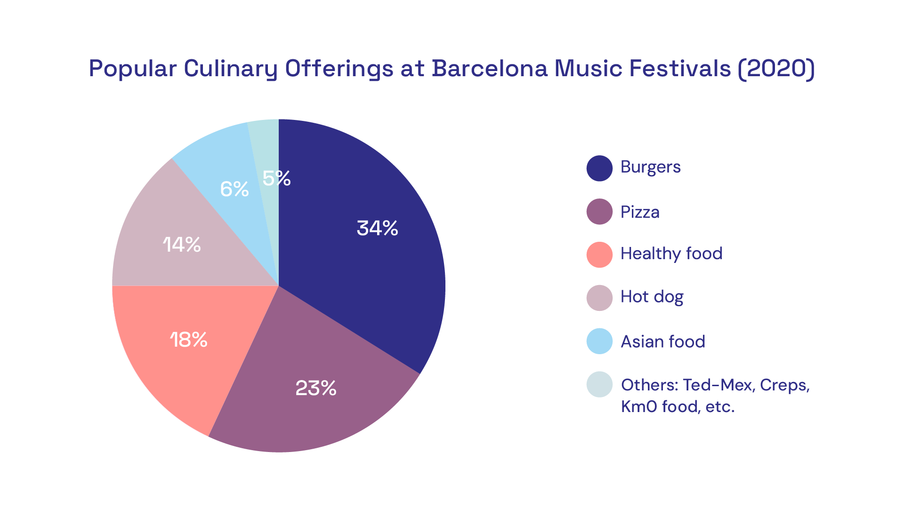

CROQUETEO
a fun and sensual visual identity for a food truck
Overview
Imagine Croqueteo as a street food experience where each bite offers a flirtatious wink to the traditional croquette. By blending the words “croqueta” and “coqueteo,” Croqueteo aims to showcase croquettes as a romantic dining experience, inviting customers to enjoy this iconic Spanish delicacy with a fun and captivating approach.
My Role
I co-developed the concept and played a key role in shaping the brand’s visual identity, overseeing everything from initial research to the application of the brand identity across various digital and print materials, ensuring consistency and visual impact. This project was developed during my Advertising and Public Relations degree as part of the Corporate Visual Image Design course, in collaboration with my classmates José Morante, Montse Grau, and Ruth García.
Design Process

Timeline
Completed in 4 months
Tools used
Adobe Illustator, Adobe Photoshop
Applications
Logo Design, Brand Identity, Online materials, Print materials

THE CHALLENGE
Launch a street food truck concept in Barcelona, from the ground up, requiring us to thoroughly analyse the competition. And design a complete visual identity that would effectively connect with our target audience.
Objectives
Define a unique gastronomic offer and a creative concept for the food truck brand that stands out among the competition.
Create the brand identity and apply it across all customer touchpoints.
UNDERSTAND
We began this project by researching Barcelona's food truck market, quickly identifying music festivals as a prime venue for food truck consumption. Given that Barcelona hosts over 50 cultural and music festivals annually—some attracting more than 250,000 attendees—this environment presented a strong business opportunity.
Market and Competitor Analysis
From here we decided to focus our research on the sector of food trucks that are placed at music festivals. To better understand this competitive landscape, we conducted a thorough competitor analysis, focusing on five of the city’s most attended events: Primavera Sound, Sónar, Festival Cruïlla, Palo Alto Market and Share Festival.
We examined the current gastronomic offerings at these events. Here you can see a chart with the most common gastronomic offers of food trucks at music festivals in Barcelona:
Our research revealed a noticeable gap in the food truck market specialising in croquettes. While today’s music festivals boast a vibrant variety of street food options, no establishments focus on croquettes, a beloved Spanish delicacy.
Testing the idea of a croquette food truck
We conducted a survey to gauge interest in a croqueta food truck concept, gathering responses from 50 Barcelona residents who had attended at least one music festival in the past two years. Here are some insights we get:
82% had never seen a croqueta-specialised food truck.
74% believed a croqueta food truck would be novel and appealing.
62% stated they would try a croqueta food truck if available at a festival.
Among participants aged 18-35, 78% expressed particular interest in trying the croqueta food truck.
These insights highlighted a strong potential demand within the 18-35 age group, which is also the most popular audience for music festivals.
DEFINE
Proposed Gastronomic offer: a croquette food truck
Croquetas are small, breaded, and fried pastries filled with ingredients like béchamel sauce mixed with meats, cheeses, or vegetables. Croquettes versatility and delicious flavour make them an ideal choice for our food truck, with other several key advantages:
Ease of cooking
Can be enjoyed on the go at festivals
Wide variety of flavours
Limited competition
Target audience
Our target audience includes young adults aged 18 to 35 who live in Barcelona and embrace an urban lifestyle. Many are students, professionals, or a mix of both, giving them the disposable income to enjoy leisure activities. They are festival-goers who love attending cultural events, socialising outdoors, and enjoying new experiences with friends.
Aligned with the current trend of treating food as a source of pleasure, our audience also participates in the "food porn culture", often sharing photos of their meals on social media.
Croqueteo: the creative concept and naming
As our food truck is born in the city of Barcelona, we embraced the words "croqueta" and "coqueteo", in Spanish, to create the creative concept. By combining the the words "coqueteo" and "croqueta," we’ve named our food truck CROQUETEO. Coqueteo is the act of flirting, without any strings attached.
This concept positions croquetas as fun and flirtatious without veering into overtly suggestive territory, creating a playful identity for the brand.
CROQUETEO aims to transform croquetas into a pleasurable experience, making them both visually and gastronomically appealing for the target.
Visual style and Tone of Communication
While the concept treats croquetas as a refined yet accessible pleasure, we are intentionally steering away from traditional gourmet aesthetics (e.g., black and gold colours, classic fonts,etc).
Instead, we propose a lighthearted tone that embraces playful symbols and flirtatious iconography, making the brand accessible to an audience that doesn’t resonate with conventional luxury codes. The visual style is designed to be kitsch, adding a quirky, approachable charm that aligns with the "flirting" theme.
The tone of communication Croqueteo is bold, cheeky, and irresistibly fun. Humor and irony are key elements, with a casual yet confident voice. This approach ensures the brand remains approachable, unapologetically kitsch, and brimming with personality, just like its irresistible croquetas.
Visual References
To effectively convey the playful and flirtatious essence of CROQUETEO, we drew inspiration from a diverse range of visual references that reflect sensuality, beauty, and charm. These references guide our brand's aesthetic direction:
Aphrodite myth
Aphrodite, the goddess of sensuality, beauty, and love has been interpreted through various artistic lenses throughout history.
Eros/Cupid myth
Eros, the god of love in Greek mythology who shoots arrows that make people fall in love. Is it a long-standing iconography associated with love.
Rococo
The Rococo movement, originating in France, is characterised by light, soft, and luminous colours. It emphasises themes of nature, mythology, and love. Rococo reflects the refined, exotic, and sensual aspects of daily life and human relationships.
Nouvelle Vague
The French New Wave cinema of the 1950s, led by directors like Jean-Luc Godard and François Truffaut, portrayed women as muses—sensual and flirtatious. Actresses such as Anna Karina and Emmanuelle Riva became symbols of seduction in films like Une femme est une femme and À bout de souffle, highlighting gestures that convey flirtation, such asrunning a finger across the lips.
IDEATE
To capture the playful and flirtatious spirit of CROQUETEO, we developed a moodboard that explores the visual language we wanted to convey: vibrant colors, quirky patterns, and kitsch-inspired elements that align with the fun and approachable character of the brand.
Logo Design
To bring the CROQUETEO concept to life, we started with hand-drawn logo sketches. The initial drafts focused on creating a text-based logo, modifying the letter O to make the typography unique.
We were clear that we did not want to include symbols of croquetas or any direct references to love or flirting (like hearts, etc.). Instead, we aimed to introduce the concept of flirting in a subtle way: two dots on 0 suggest two people ‘flirting’.
Brand experience: the set-up
Another essential aspect of the brand experience is creating the space where customers will enjoy their meals. This place must be cute, charming and must encourage people to stay there eating, chatting... and who knows, even flirting.
That's why we proposed a space with stools and high tables, a set-up easy to transport, but also creating a stylish and relaxed atmosphere conducive to good conversation and funny experiences.
TEST
With a first proposal of the concept and the inital versions of the Croqueteo's logo, we moved into the testing phase to evaluate the effectiveness of the concept “Croqueteo,” for the food truck and make improvements before developing the full range of brand applications.
We conducted one-on-one interviews with a sample of 15 participants aged 18 to 35 who reside in Barcelona and have attended at least one music festival in the past year.
These conversations allowed us to explore their opinions in depth, providing valuable insights into their perceptions of the CROQUETEO brand and visual identity. We classified the information gathered into areas for improvement and strengths to enhance. Here, you can see the most repeated comments, which we used to refine the design:
Strengths
The Croqueteo concept is memorable and attention-grabbing, well related to the logo.
I love the vibrant colours and playful design! They really reflect the fun atmosphere of a music festival."
The branding generates interest and stands out, especially with the younger crowd. It feels fresh and engaging.
Areas of improvement
The logo is catchy, but I feel like it could be more legible from a distance. The logo needs to stand out more at festivals.
Some of the visual elements feel too detailedS. Simplifying them could make the design cleaner and more impactful at a quick glance.
The overall visual style is fun, but Sthere could be more consistency in how the elements are applied across all brand materialsS to create a stronger, unified look.
The feedback gathered during the testing phase was invaluable in refining how the “Croqueteo” concept was visually articulated. It provided key insights that allowed us to fine-tune the graphic elements and confidently proceed with developing all the brand applications.
FINAL DESIGN


LEARNINGS
The Croqueteo project has been an incredibly enriching experience for me as a designer, pushing me to explore new creative territories while reinforcing the importance of user-centered design.
A key learning from this project was the importance of embracing ambiguity. The abstract nature of the concept, focusing on a playful and flirtatious approach to the food truck experience, presented challenges in ensuring that the visual elements were engaging without being overly literal.
By staying true to the concept of "coqueteo" and allowing room for creative expression, I discovered that not every aspect of a brand has to be immediately obvious or directly linked to the product.
During the research and ideation phases, I realized that building a strong emotional connection with the target audience is crucial. The importance of consistency in how playful elements are applied across all brand materials became clear, as it helped solidify the brand’s personality and made it more recognizable and memorable.
I also learned that Iteration and testing are vital for refining ideas and ensuring that the final design works as intended.
The feedback collected during the testing phase was incredibly valuable, providing insights into how the logo and other visual elements could be more effective and legible in real-life applications. This process emphasized the necessity of maintaining a flexible mindset and continuously improving designs based on user reactions.
If I were to revisit this project, I would dedicate more time to exploring the cultural and social factors that influence how people connect with food brands. Understanding these deeper layers would allow for a more nuanced and targeted design strategy. Additionally, I would involve a broader range of user perspectives earlier in the process to ensure that the branding truly speaks to a wide audience while maintaining its playful core.
Ultimately, Croqueteo has not only strengthened my skills in branding and visual communication but also reaffirmed the value of a well-executed creative concept that is both bold and adaptable.
t’s a reminder that successful design is not just about aesthetics, but about creating experiences that resonate with users on a deeper, emotional level.
More Art Direction Work